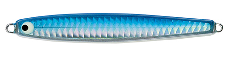
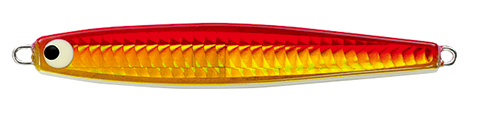
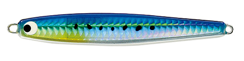
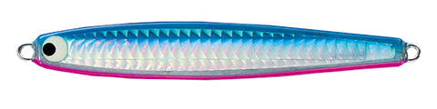

ピーボーイジグ キャスティング
（P-Boy Jig Casting）
ピーボーイジグ キャスティング（P-Boy Jig Casting）はTACKLE HOUSE（タックルハウス）のキャスティング用メタルジグです。
キャスティングゲーム専用設計の、タックルハウスのメタルジグです。
安定した飛行姿勢で、飛距離・キャストの精度ともに抜群。引き抵抗が少なく、着水と同時の高速トゥイッチングはまるでミノーのような感覚で使えます。低速から超高速まで浮き上がりを抑えた泳ぎで、ベイトフィッシュのように見せられるのが特徴です。

画像出典:TACKLE HOUSE公式HP
スペック
- メーカー
- TACKLE HOUSE（タックルハウス）
- タイプ
- メタルジグ（キャスティング専用）
- 重さ／全長
- 25g／90mm、35g／100mm、50g／115mm、65g／130mm
- フック
- ST-46#4（25・35g）／ST-46#1（50・65g）
- リング
- #4（25・35g）／#5（50・65g）
- ターゲット
- 青物・サワラ・シーバス・ヒラメなど
- 価格
- 1,300円（25g）／1,400円（35g）／1,500円（50g）／1,600円（65g）（メーカー表記）
▼今すぐチェック

ピーボーイジグ キャスティングの特徴
よく飛んで、ミノーのように操作できるキャスティングジグ
-
飛距離と精度にこだわったボディ
キャスティングゲーム専用設計のボディシェイプで、飛行姿勢が安定。遠くのナブラにも、狙ったポイントにも投げやすい。
-
ミノー感覚の高速トゥイッチ
引き抵抗が少なく、着水と同時の高速トゥイッチングはまるでミノーのよう。速い動きに反応する青物・サワラを誘いやすい。
-
浮き上がりにくい安定した泳ぎ
低速から超高速まで、浮き上がりを抑えた安定したスイミングアクション。カウントダウンしてのロング＆ショートジャークにも対応する。
ピーボーイジグ キャスティングの使い方
基本はキャストして狙うレンジまでカウントダウンし、ただ巻きや高速トゥイッチで誘います。
ナブラが出たら着水直後から速巻き＋トゥイッチ、沈んでいる魚にはしっかり沈めてからロング＆ショートのジャークでフォールを見せるのが基本です。
ピーボーイジグ キャスティングの得意な状況
堤防・サーフ・磯からの青物やサワラのキャスティングゲームが得意です。
船からのキャスティングにも使え、ナブラ撃ちや表層〜中層の速い釣りで出番があります。
ワンポイント
25・35gは堤防やサーフのライトショアジギング、50・65gは磯や船からのキャスティングが目安。同じボディにブレードを付けた「ブレードカスタム」もあるので、反応を見て使い分けましょう。
ピーボーイジグ キャスティングのサイズの使い分け
| 型番 | 全長・重さ | フック・リング | こんな時に |
|---|---|---|---|
| PJC25 | 90mm・25g | ST-46#4・#4 | 堤防・サーフのライトショアジギング |
| PJC35 | 100mm・35g | ST-46#4・#4 | 遠投が必要な堤防・サーフ |
| PJC50 | 115mm・50g | ST-46#1・#5 | 磯や船からのキャスティング |
| PJC65 | 130mm・65g | ST-46#1・#5 | 大型青物、さらに遠投したい時 |
※数値は公式ページより。
オススメカラー
ピーボーイジグ キャスティングは全14色（各サイズ共通）。そのうち4色を紹介します（画像は公式より。公式のカラーチャートはバーチカルの同色）。

2G. ブルーGブルーの背にグローを組み合わせた定番色。

16G. ゴールドピンクGゴールドとピンクの強いアピール色。朝夕マズメや濁り潮に。

イワシイワシを意識したナチュラル系。澄み潮の日中に。

ブルーピンク青物の定番ブルピン。まず1本選ぶならこの色。
画像出典:TACKLE HOUSE公式HP
ピーボーイジグ キャスティングに似ているルアー
-
 ピーボーイジグ キャスティング ブレードカスタム
タックルハウス
詳細はこちら＞
ピーボーイジグ キャスティング ブレードカスタム
タックルハウス
詳細はこちら＞
このジグにブレードを付けたカスタム版。ボディごと回転する「巨大なブレード」。
-
 ジグパラショート
メジャークラフト
詳細はこちら＞
ジグパラショート
メジャークラフト
詳細はこちら＞
コスパの良い定番ショアジギングジグ。
-
 シーライド
ブルーブルー
詳細はこちら＞
シーライド
ブルーブルー
詳細はこちら＞
ライトショアジギングで人気のメタルジグ。